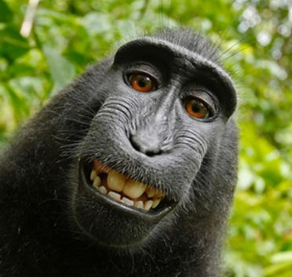

Memeliler
Memeliler, omurgalı hayvanlar arasında önemli bir gruptur. Genellikle sıcak kanlı olup, genellikle kürkleri veya tüyleriyle kaplıdırlar. Ayrıca genellikle yavrularını anne sütü ile beslerler. Örnek memeli türleri arasında köpekler, kediler, filler ve insanlar bulunur.
Sürüngenler
Sürüngenler, soğuk kanlı omurgalı hayvanlardır ve genellikle pullarla kaplıdırlar. Sürüngenler arasında yılanlar, timsahlar, kaplumbağalar ve kertenkeleler gibi türler bulunur. Bu hayvanlar çoğunlukla karasal ortamlarda yaşarlar ve bazıları zehirli olabilir.

Kuşlar
Kuşlar, tüyleri ve kanatlarıyla tanınan omurgalı hayvanlardır. Genellikle uçabilirler ve geniş bir tür çeşitliliğine sahiptirler. Örnek kuş türleri arasında kartallar, kargalar, penguenler ve baykuşlar bulunur. Kuşlar, farklı bölgelerde yaşayan ve çeşitli beslenme alışkanlıklarına sahip olan çok çeşitli türlere sahiptirler.